来源：https://nivut760ftk.feishu.cn/docx/JUkxdxMvKohWaXxI5rocONV4nq4
你好，我叫艾小飞，出生农村，背靠负债
在创业路上屡败屡战的95后，人称打不死的小强哈哈
今天想分享下，一个能提高60%销量的小红书测品思路是怎么玩的
从今年过年开始，我累计做有十多家小红书店铺了
在这里面呢，我发现【测品】是小红书电商绕不开的一个关键环节，也发现很少有人专门讲这类的干货
同时我在这里面也踩到很多坑，带来很高的试错成本
正好在前段时间呢，被我发现一个测品思路，并测试验证成功后，让我的店铺提升了60%订单销量
于是总结整理出这套教程，包含优点缺点、操作流程和注意事项，比较细节化，实操性也比较强
分享出来的初衷，是希望你看完后能少走弯路
这篇内容有点长，为了让你阅读起来不枯燥乏味，我会用真实经历配图文的形式来给你分享
先给你看个目录表，方便知道接下来会讲到哪些到主题内容，让你学习起来更有获得感
测试你选出来的产品，用户是否会去买单，并能通过这个方法，去提升你的帐号流量和店铺销量，还能用这个思路去套用到多个不同的产品和场景
这个说来也挺巧，可能是我的需求驱动吧，当时我用的测品方式真太土了，效率也很低，就想着要找比这个更高效率的方式来替代
有一天我在小红书刷到了这篇水果四宫格的笔记
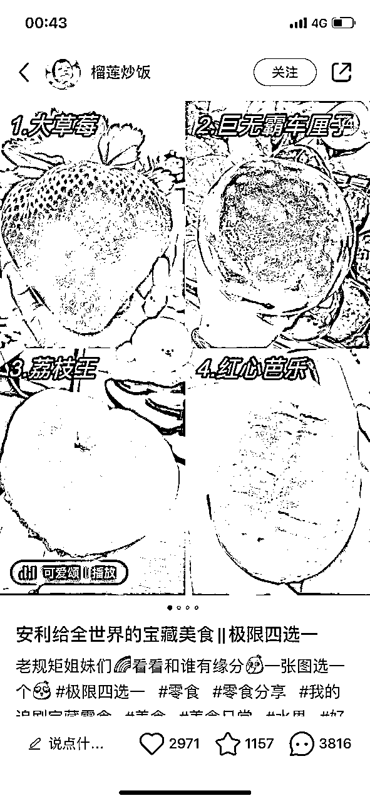
意思是让用户在4张图里面，来选一个自己喜欢的，我看完评论区后，觉得还挺有意思的，有趣好玩又有流量
而且看到他笔记评论的数量，比点赞收藏加起来都还要多
这个意外发现让我有了新的灵感，在思考能不能通过他的这个方法用来做测品呢？
灵光一现，说干就干！
然后我就马上去搜索他这篇笔记的关键词，“极限四选一”，看看其他热门笔记都是怎么做的
发现了一个共同点：评论都比点赞多，而且基本上都不缺流量！！
这个小惊喜， 正是我想要的效果，于是就开始选个产品来做测试了
我是选了什么产品来做的测试呢
刚好在前段时间，抖音上刷到了这条视频
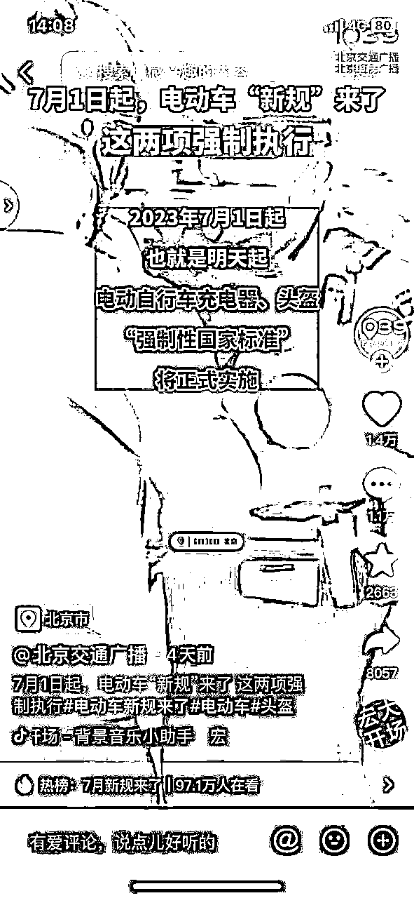
大致意思是，从2023年7月1日起，凡是在路上骑电动车的，都要求戴头盔了，而且是3C认证过的，要不被现场抓到，会被处罚几十元或扣车
当时我就意识到，这个因政策带来了需求，短时间内肯定有人去搜索，去购买
我前段时间想去另开店卖头盔的，但一直没有个高效率的测品方式
正好遇到这个新的玩法，那么机会不就来了吗哈哈
收集素材→裁剪拼图→发布笔记→筛选淘汰→确定产品→开店卖货
那我就继续拿头盔来说吧，按照我的惯例，刚开始的时候，我是在小红书上搜索【头盔】两个字，点击最热那一栏，去寻找热门爆款里最受欢迎的头盔
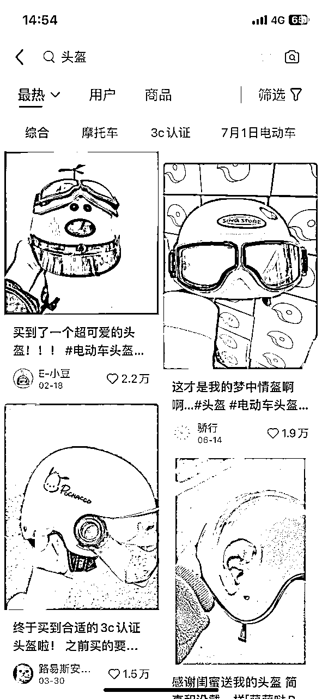
选出了10个我认为颜值高且符合新规标准的头盔，并截图下来做素材备用
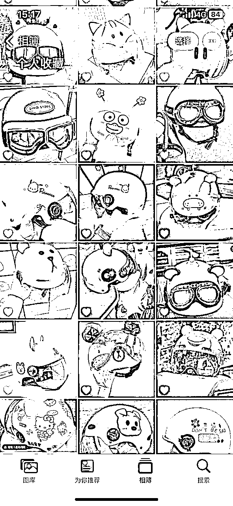
这时我会借用P图工具：美图秀秀来帮忙
怎么做呢
我会在10个产品图里，随机选4张图，用拼图的模式，凑成一张四宫格的图片，并填上序号
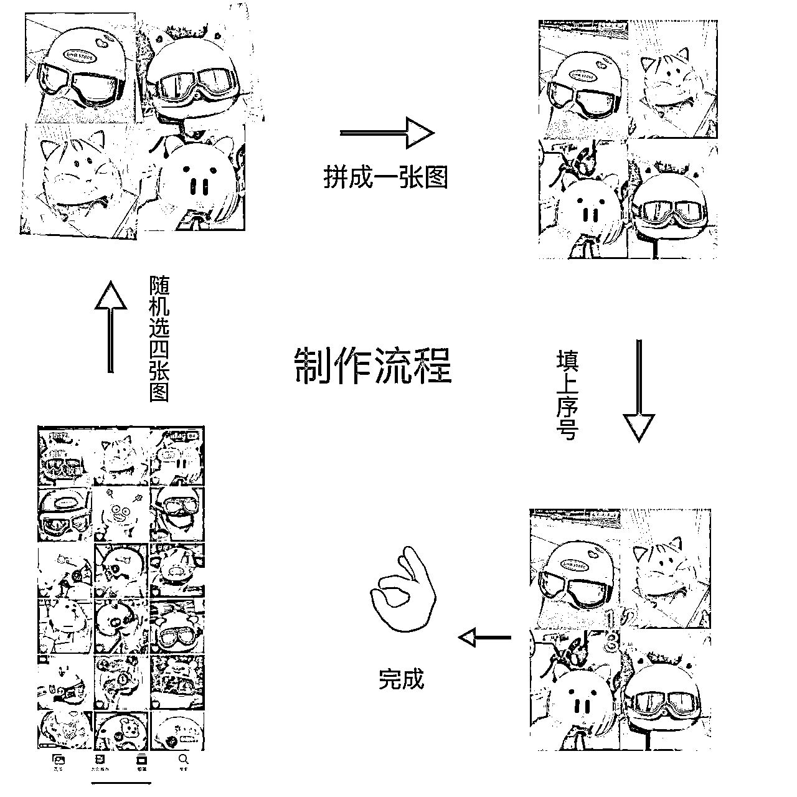
写标题
当时我看到很多热门前排的笔记，标题都是很简短的，往往爆款都是重复的
为了节省时间效率，所以我也去参照他们的格式，尽量简短且通俗易懂
我写的是：
“极限四选一，你会选哪个”，
就这么的简单，我的标题没有过多复杂，简简单单才能让用户更快的做出选择
选话题标签
话题标签是很重要的，会直接影响到你的测试流量效果
我是怎么做的呢？
我会在内容区那，选几个跟产品或选题相关的话题，标记上
比如像这样：
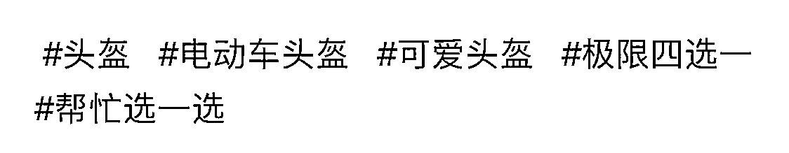
OK，这个时候就可以发布笔记去做测试了
刚开始发布笔记的时候，大概过了3分钟左右，将会有第一波人来看你的内容，并会留下评论
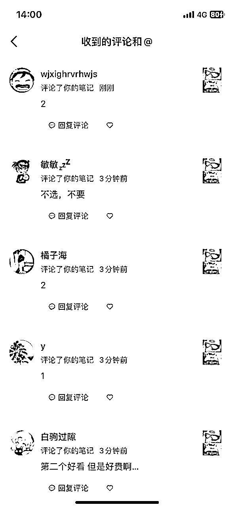
然后在第一篇笔记评论里，选到他们最不喜欢的两个并淘汰掉
再用其他的两个产品图片拼成四宫格，按照下面这张图继续去制作
制作好了后，就发布第二篇笔记，按照第一篇筛选的模式继续淘汰
就这样反复利用用户的评论反馈，来选出最后2个他们最喜欢的产品，这个时候，就可以进行标价筛选了
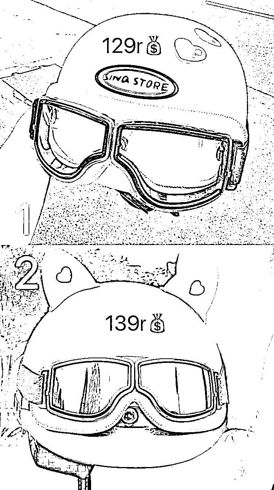
如何标价呢？
在你找到货源的时候，在进货价的基础上，加价20%-50%，标在两个产品图片上做测试，看看他们更愿意接受哪个产品
在最后选出的这两个产品里，靠评论数据选出他们最喜欢的一个，并去找货源图片素材，开店上架商品
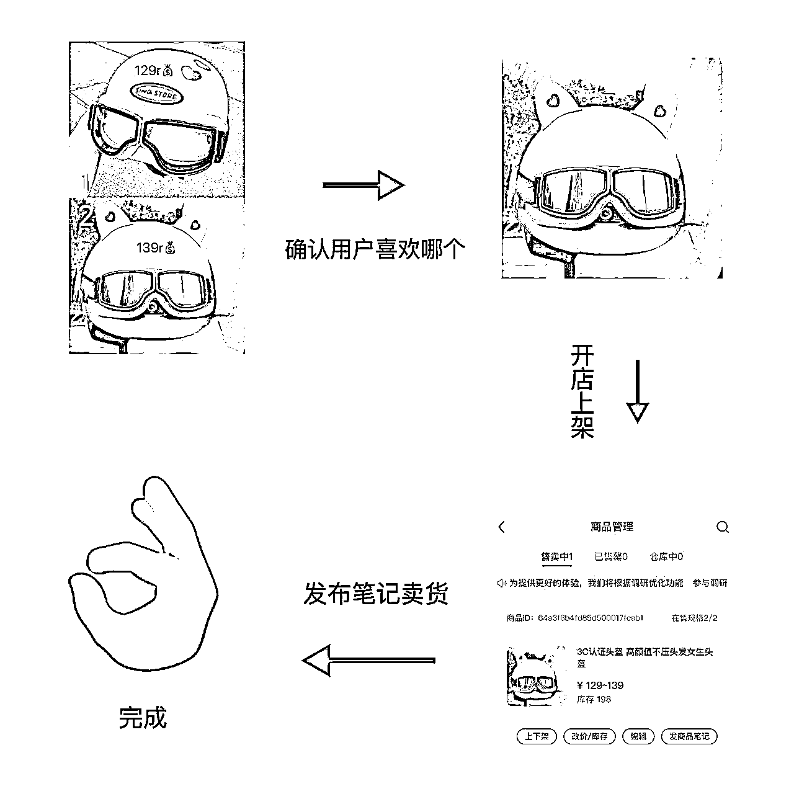
这个时候就可以发布种草笔记了，去带货这款产品
我相信很多创业者在做测品的时候，包括我在内，大多数都是在无用功
为什么这么说呢？
因为在我的角度，认为我的产品是最好的，用户一定会喜欢的，但往往都判断出错了
就像我经常说的，不要有自嗨的思维去选品，但奇怪的是，有时候我也会陷入到这种自嗨的陷阱里
但这个测品的思路，它能更深层次的了解用户的喜好
深刻的了解他们喜欢什么，不喜欢什么，不喜欢的理由是什么
让你能高效率的去选择在用户心中满意的产品，拉高你的订单数
同时还能通过产品的标价，看看用户是否能接受你的这个价位
如果能接受，那么你就去开店上架卖货
如果不能，那你就再做一些降价调整
但切记一定不要降得太低了
如果你卖一个产品都没啥利润了，那你做这个意义又何在呢
在我眼里做小红书电商，利润率低于10%，我就不会考虑去做了
还有个好处，就是通过这个思路玩法，去测试你的帐号流量是否是正常的
如果你发这类的选题，笔记流量都没有超过100以上的，那么说明你的帐号权重是出现问题了
没有哪个玩法是天衣无缝的，这个有优点，当然也有不足的
首先它会被系统提示违规，说你去诱导别人去评论点赞收藏这些
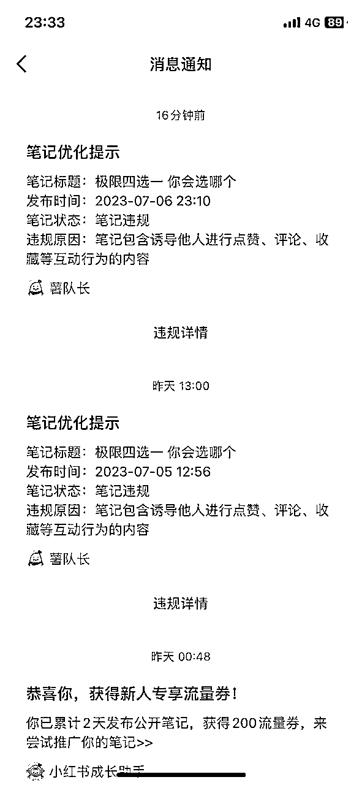
虽然我不太确定，这个违规是被人举报还是系统自动检测的，但后面我再用同样的素材和文案测品时，也不会影响我的笔记流量，都是正常的。也没有再接到什么违规提示
不要去选多个不同品类的产品来做测试，那样会显得没有规律性，非常的乱，让人不知道你发这张图是来做什么的
比如你看下面这张图
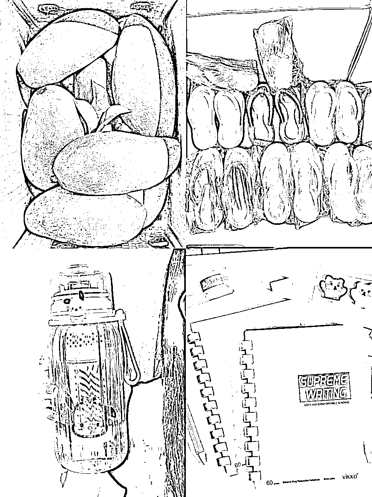
如果你是用户，你能联想到他们之间都有哪些关系吗？
选图时是很重要的，如果你选得不好看，颜值不高或拍摄角度不好，都会影响到用户的判断。从而导致你的产品反馈数据有偏差
我给你们看个案例吧，如果给你来选，哪张图片会更有点进去看的欲望呢
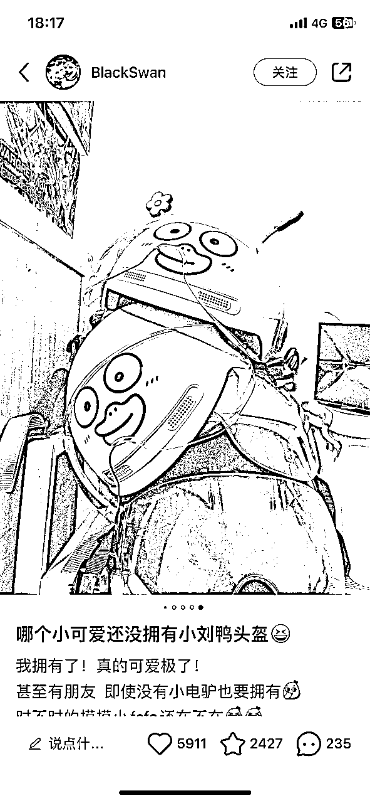
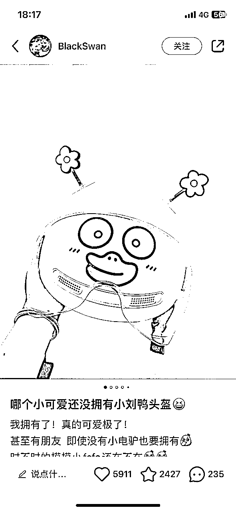
在选图的时候，要选一些无字的纯图，不要去选有字的，因为你在制作拼图的时候，就相当于是一张封面了
如果封面给人感觉是花里胡哨的，那么很难去吸引到用户注意力的，从而会影响到你的笔记流量
来，继续给你们做个对比，如果给你来选，哪张封面会更吸引你呢
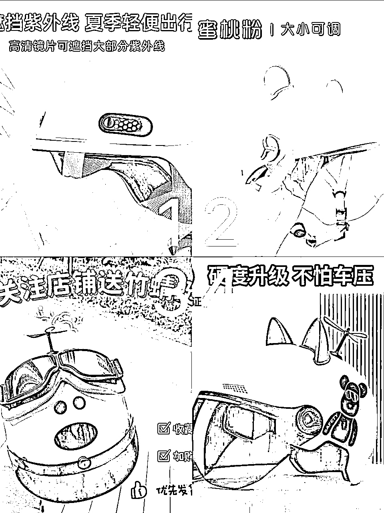
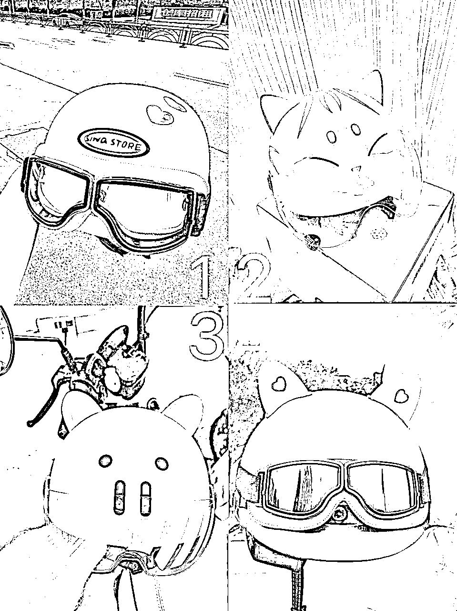
是不是对比完了后，感觉都不一样了
同样的，用户也是这么想的
选拍摄角度一致的图片，让人看起来很整齐，很有舒适感
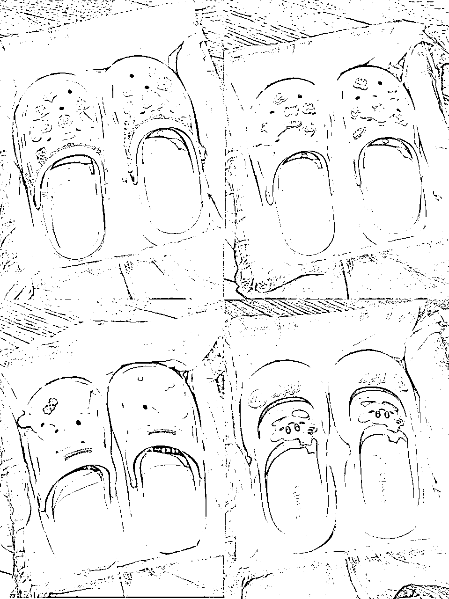
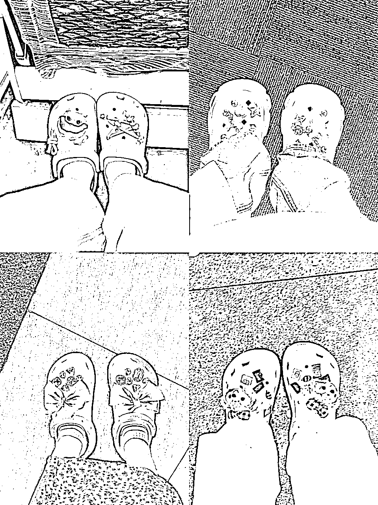
再给你们看个反例
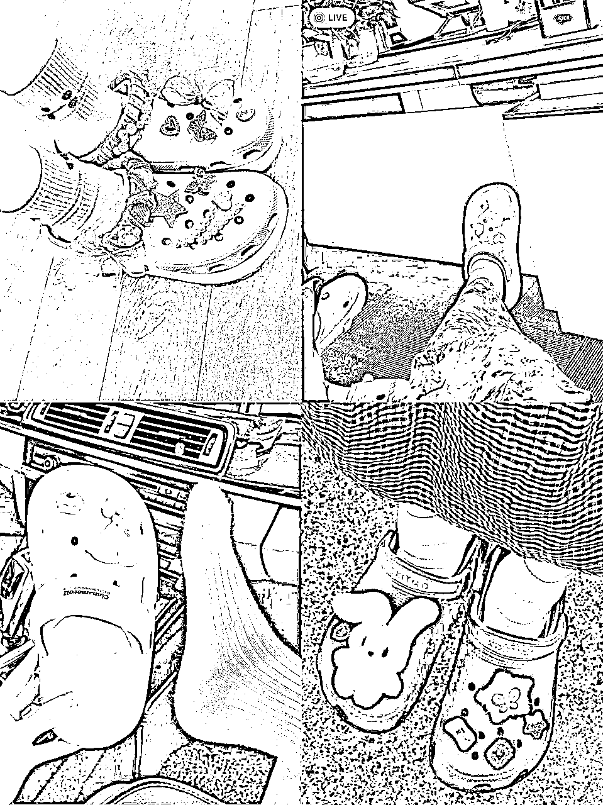
因为小红书是种草平台，用户是先看颜值再看价钱的。
你价钱很低但产品不符合他们的审美，用户也不会喜欢的
先看颜值再看价钱，记得这个顺序不要搞反了
用图文形式，比用视频形式测品，效果会更好
在一张图片里，更直观的快速找到自己喜欢的产品
而且图片被查重的风险，比视频更低。不会那么的容易判违规
我特意用了话题这个方式去做测试，发现我用话题比不用话题，流量效果会更好
什么是话题呢？
我给你们看张图，就是这一种
所以你们在测试的时候呢，可以添加这个产品相关的话题，这样流量会更多一些，同时也会吸引这话题里面浏览过的用户来看，人群也相对来说更精准一点
我认为如果你在测品的时候，流量都不高于100以上的，那么这个就是你的帐号权重问题了
可能你之前有过一些违规的操作行为
比如短时间内批量发布笔记
比如有引流私域的行为
比如被判为搬运的行为等等这些
如果连续发三篇以上，流量都没有办法突破100的
那么我建议你可以重新注册一个新号，用同样的图片和文案去发布，你会获得一个新奇的惊喜
一定要先测试好账号笔记流量正常了，再去开店卖货，因为店铺90%的流量，是来自你的笔记
如果笔记爆了，除了引导评论外，你就不要去做任何的动作了，不要去修改编辑笔记，不能去上架产品，也不要去删除这篇笔记
前后发布笔记的时间，至少要相隔30分钟以上，单个账号当天发布次数，不要超过10条。要不会被强制隐形的限流
如果你想同时测试多个产品，可以多注册几个账号来分开测品，同时也要关掉Wifi，不要集中登陆在同一个网络IP下
好了，说完了十个注意的事项，那么就来说说，这个玩法我得到了哪些启发吧
我常常说的，要多站在用户的角度去思考，不能自嗨，不能自嗨
但往往自己选品选久了后，会陷入一种自我感觉良好的思维陷阱
我认为给我最大的启发，真正的在用行动，从用户的角度来选出他们喜欢的产品，这样能减少很多时间成本和提高产品爆款的概率
我这个测品思路，不单单可用来在小红书的，同样也可以延伸到很多场景
举个例子啊
比如说你现在有很多私域客户在微信里，但不知道哪款产品用户会更喜欢，你可以用我的这个方式，发在朋友圈用拼图四宫格做测试，看看他们会更喜欢你的哪个产品，这样会不会更好呢
当你的产品一直到无人问津，那么你也可以用我的这个方式，去测试下看看是不是你的产品他们不喜欢，或者是因为价钱的问题，他们接受不了
一直测试，一直调整，直到找出问题并去解决掉为止
你可以举一反三，看看能不能用我的这个思路，延伸套用到你的产品和场景里
咳咳～如果这招对你有了有帮助，记得回来帮我点个赞啊
说完了我的启发，那你呢，得到了哪些不一样的启发？
我觉得这个玩法思路，能很轻松的帮助有自嗨思维的人，去测试出用户喜欢的产品，也能感受到用户的真实想法是什么
他们给你笔记评论，能帮助你获取到更多的推荐流量，还能让你提升更高的店铺销量
这个不单单是可以用在小红书上，还可以套用到很多的产品和场景上，可以举一反三
好了，今天的分享就到这里了，如果你看完之后觉得有帮助的话，麻烦点赞支持一下
谢谢大家，我叫艾小飞
原创：艾小飞
转载可私信
禁止搬运和抄袭
微信：aifei9977 （记得备注来意）